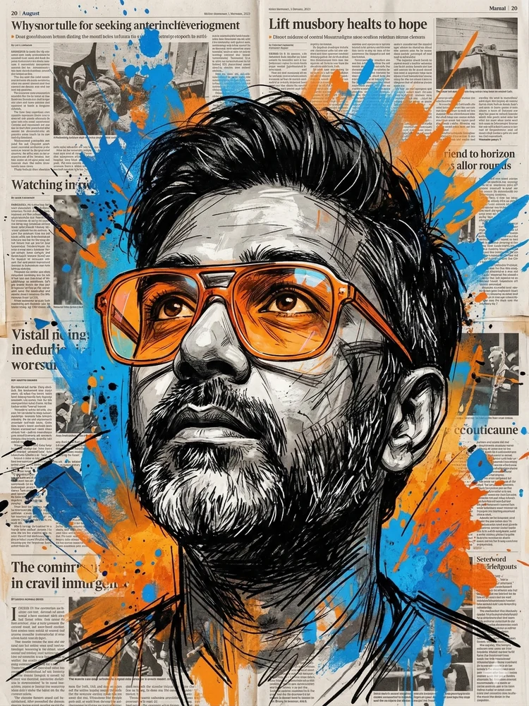

The New Household Economy · Issue 06
The New Household Economy
A two-part research editorial on how AI is repricing household earnings, first jobs, infrastructure and the systems families rely on to move up.
Featured series
The New Household Economy
AI is a productivity machine, not a fairness machine. The question is who captures the value when work gets faster.
Open the series →Elegant thought, commercial judgement and editorial taste belong in the same room.
Curated feature
A publication shaped like an evening conversation, not a feed.
The point of Editorial is not to flood the page with updates. It is to present select work with calm authority—collected, circulated and worth revisiting.
The writing leads. The design frames it. The advisory work remains quietly in the background.
Curated list
Selected features
Research, perspective and conversations from the field.
Current feature
The New Household Economy
A two-part editorial on AI, household earnings, infrastructure and national resilience.
Open series →The New Household Economy
The Middle-Class Ladder Is Being Repriced
Household earnings, first jobs and the quiet bargain behind modern family security.
Read Part 1 →The New Household Economy
Who Gets to Live in the AI Economy?
Infrastructure and the systems beneath national AI ambition.
Read Part 2 →Artificial intelligence · Work
Everyone Wants an AI Employee. The Useful Ones Are Still Interns.
Where enterprise AI is—and is not—earning its keep.
Read article →Founder conversation · Liaura
The Founder Building a Kinder Internet for Children
Hugh Shepherd on childhood, music and digital safety.
Read conversation →Travel · Hospitality
The Future of Travel 2026
Commerce, trust and the next growth battle in travel.
Read article →Encounters
Thirty Minutes of Truth
What becomes visible when a conversation slows down.
Read article →Salon note
Discretion over noise. Presence over performance.
Editorial is for readers who value precision, judgement and perspective with weight behind it.
Less content platform. More private briefing room.

Host
Aabhishek Siloya
Global business coach · Founder
Editorial is where commercial experience, curiosity and an instinct for clarity become published thought: selective, elegant and meant for serious readers.